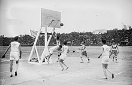
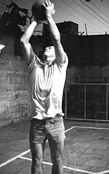
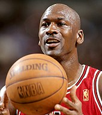
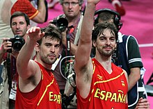
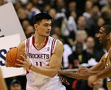
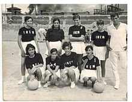
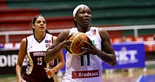
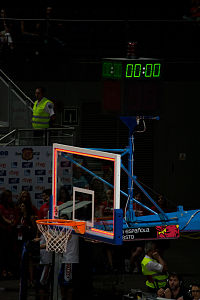
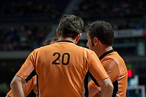

El baloncesto nació como una solución a la necesidad de realizar alguna actividad deportiva durante el invierno, en la escuela de la YMCA de Springfield, Massachusetts. En 1891, James Naismith, profesor de educación física en la escuela, ideó el baloncesto como juego de pelota basado en trece reglas. El juego se extendió por Estados Unidos, Canadá y el resto del mundo, experimentando algunas modificaciones durante el curso del tiempo. Muchas de las reglas iniciales se mantienen hasta la actualidad, aunque algunos aspectos del juego tuvieron que modificarse para responder a desarrollos en la técnica de los jugadores y aspectos no previstos en el desarrollo del juego, normalmente como consecuencia de la manipulación de las reglas por parte de los entrenadores y jugadores para inclinar los partidos.

James Naismith, inventor del baloncesto, con un balón y una canasta.
En 1891, James Naismith intentaba idear un deporte que sus alumnos pudieran practicar bajo techo, pues los duros inviernos en Nueva Inglaterra dificultaban la realización de ejercicio al aire libre. Las actividades de educación física que se practicaban en la época se basaban en los métodos alemanes, monótonos y poco indicados para un grupo de jóvenes llenos de energía. Naismith se inclinaba por un juego de pelota, para motivar mejor a sus alumnos, pero los deportes populares por entonces se caracterizaban predominantemente por el uso de la fuerza o el contacto físico y eran inadecuados para practicarlos en un gimnasio. Aunque a veces se mencionan los antiguos juegos de pelota pok-ta-pok y tlachtli —de origen maya y azteca respectivamente— como antecedentes del baloncesto moderno, según su inventor la idea de utilizar los tiros a una canasta como objetivo del juego provino de un antiguo juego de su infancia denominado duck on a rock —o 'pato sobre una roca'— que consistía en alcanzar un objeto colocado sobre una roca lanzándole una piedra. Naismith encargó cajas de unos 50 cm² para utilizar como blanco, pero el bedel del colegio solo logró conseguirle unas cestas de melocotones, que mandó colgar en las barandillas de la galería superior que rodeaba el gimnasio, a una determinada altura.
Como Naismith contaba con 18 alumnos, decidió que los equipos estuviesen formados por nueve jugadores cada uno. Pronto el número de jugadores se redujo a siete, y, en 1896, al actual de cinco jugadores.
El tablero surgió para evitar que los seguidores situados en la galería donde colgaban las cestas, pudieran entorpecer la entrada del balón. La introducción del tablero, a comienzos del siglo XX, dio lugar a la jugada llamada rebote, que ha pasado a ser fundamental en el juego. Las cestas de melocotones dieron paso a aros metálicos con una red sin agujeros hasta evolucionar a la malla actual.
James Naismith diseñó un conjunto de 13 reglas básicas para el incipiente deporte:
-
El balón puede ser lanzado en cualquier dirección, con una o dos manos.
-
El balón puede ser palmeado/golpeado en cualquier dirección, con una o las dos manos (nunca con el puño o mano cerrada).
-
Los jugadores no podrán correr con el balón. Deberán pasarlo incluso desde otro lugar en el que lo cogieron, se concederá una relativa tolerancia al jugador que en plena carrera reciba el balón y deba pararse.
-
El balón debe llevarse en las manos o entre ellas. Los brazos o el cuerpo no se deben usar para sostenerlo en ningún caso.
-
Está prohibido cargar con el hombro contra un adversario, así como agarrar, empujar, poner la zancadilla o golpear de manera alguna al oponente. Toda infracción a esta regla por parte de cualquier jugador se considerará una falta y en caso de reincidencia, el infractor será eliminado hasta que se consiga un nuevo cesto. Si la intención al golpear es evidente, el jugador será eliminado por el resto del partido y no podrá ser reemplazado.
-
Golpear con el puño el balón es falta, al ser violación de las reglas 3 y 4, sancionándose del mismo modo que la regla 5.
-
Si cualquiera de los equipos hace tres faltas personales consecutivas, se contabilizará una canasta para el equipo contrario (consecutivas significa que durante ese tiempo el oponente no haya cometido ninguna falta).
-
Se contará canasta cuando el balón sea lanzado, golpeado o palmado desde el suelo hasta la cesta y se quede en ella, siempre que los defensores no toquen el balón o dificulten la canasta. Si el balón se queda en el borde de la cesta sin llegar a entrar y el oponente mueve la canasta, se contabilizará como punto.
-
Cuando el balón salga fuera del campo de juego, volverá al campo. La primera persona que lo toque lo lanzará al campo de juego. En caso de discusión el árbitro (auxiliar) realizará un salto entre dos. El que saca dispone de cinco segundos para hacerlo; si retiene el balón más tiempo, el balón pasará al equipo contrario. Si cualquiera de los equipos persiste en retrasar el juego, el árbitro auxiliar le señalará falta.
-
El árbitro auxiliar será el juez que anote las faltas personales y avisará al árbitro principal cuando se cometan tres faltas consecutivas. Podrá descalificar a los jugadores según lo establecido en la regla número 5.
-
El árbitro principal juzgará lo que se refiere al balón y determinará cuándo éste está en juego o ha salido fuera, a qué equipo pertenece, además de llevar el control del tiempo. Decidirá cuándo se ha marcado un tanto y contabilizará las canastas y asimismo realizará las obligaciones habituales de un árbitro.
-
El partido constará de dos partes de 15 minutos, con 5 minutos de descanso entre las mismas.
-
El equipo que obtenga el mayor número de cestos en ese espacio de tiempo será declarado ganador. En caso de empate, si los capitanes acuerdan hacerlo, el partido se podrá continuar hasta que se marque una canasta.

El equipo de la Universidad de Kansas en 1899, con su entrenador James Naismith en la fila superior a la derecha.
La YMCA desempeñó un papel importante en la expansión del baloncesto en los Estados Unidos y Canadá, así como en el resto del mundo. El primer partido en Europa tuvo lugar en París en 1893. Sobre la misma época la asociación organizó partidos en Tianjin, (China), en India, en Japón y en Persia. Los partidos de baloncesto femenino comenzaron también en una época temprana.
A comienzos del siglo XX, el baloncesto devino una actividad corriente en numerosas universidades estadounidenses, gracias a James Naismith. El primer partido entre universidades tuvo lugar el 9 de febrero de 1895 entre la universidad Hamline y la escuela de Agricultura de la Universidad de Minnesota. En 1897, la Amateur Athletic Union tomó el control de la gestión del baloncesto de manos de la YMCA. En 1901, numerosas universidades empezaron a financiar los partidos y en 1905, los representantes de quince universidades crearon el Comité del Reglamento del Baloncesto. El mismo año, a sugerencia del presidente Theodore Roosevelt, se forma la Intercollegiate Athletic Association, que absorbió el Comité en 1909 y se convirtió en 1910 en la NCAA, la principal federación estadounidense de deporte universitario.
Poco antes del comienzo de la Primera Guerra Mundial, la NCAA y la Amateur Athletic Union se disputaban el control del reglamento. A raíz de la entrada de Estados Unidos en el conflicto, en 1917, las fuerzas armadas estadounidenses contribuyeron a la expansión del baloncesto en suelo europeo, gracias a la importante presencia de entrenadores de este deporte presentes junto a las tropas. El mismo Naismith pasó dos años en Francia con la YMCA en esta época.
El primer partido profesional tuvo lugar en 1896, en Trenton, y en 1898 se fundó la primera liga profesional, llamada National Basketball League, conformada por seis equipos. Los primeros campeones fueron los Trenton Nationals, seguidos de los New York Wanderers, los Bristol Pile Drivers y los Camden Electrics. Esta liga solo duró hasta 1904. Durante los años siguientes se organizaron otras ligas de ámbito regional. En esta época no se respetaba el espíritu original del juego y este se tornaba a menudo violento, no solo por parte de los jugadores, sino también de los espectadores.
Las principales ligas profesionales surgieron a partir de los años 1920: la Metropolitan Basketball League apareció en 1921, y la American Basketball League en 1925. Asimismo en 1922 se fundó el equipo de los Rens de Dayton, compuesto exclusivamento por afroamericanos. Sus rivales principales eran los Original Celtics, conocidos como los padres del baloncesto y presentados como los campeones mundiales de la disciplina. Como los Harlem Globetrotters, creados en 1926, los Celtics organizaban torneos por todo el país a la manera de un espectáculo de circo y dominaron el deporte del baloncesto en los Estados Unidos entre 1922 y 1928, fecha de su disolución.
El baloncesto universitario empezó a despertar interés a nivel nacional con los tres torneos divisionales de la National Collegiate Athletic Association (NCAA), donde participan un total de 1.066 equipos universitarios, siendo el más importante y el más antiguo (se disputa desde 1939) el de la División I (en inglés, NCAA Men's Division I Basketball Championship), conformado por los 68 mejores equipos universitarios del país luego de haberse clasificado en sus respectivas conferencias. Se juega en formato de eliminación directa disputándose cada primavera en Estados Unidos. El torneo fue creado por la Asociación Nacional de Entrenadores de Baloncesto y fue idea del entrenador de la Universidad de Kansas Phog Allen. Se juega en su mayor parte en marzo, por lo que es informalmente conocido como la "Locura de marzo", también llamado el "Gran Baile" al estar los mejores de cada conferencia universitaria en la recta final. El torneo, y especialmente las semifinales nacionales y final (Final Four), se han convertido en uno de los acontecimientos deportivos más seguidos del país, con lleno total en los estadios y coliseos donde se disputan los encuentros y retransmisión por televisión a todo el país, jugándose a un nivel digno de los profesionales pese a ser amateur. Otra organización deportiva universitaria es la National Association of Intercollegiate Athletics (NAIA), cuyo torneo de baloncesto data de 1937; este solo lo disputan 32 equipos en una sola semana, siendo una organización más pequeña y menos pòpular que la NCAA.
El 6 de junio de 1946 se creó la Basketball Association of America (Asociación de Baloncesto de América), conocida por las siglas BAA. En el primer partido se enfrentaron los Huskies de Toronto, jugando en casa, y los Knicks de Nueva York. Tras tres temporadas, en 1949, la liga se fusionó con la National Basketball League fundada en 1937 para formar la National Basketball Association (NBA). En los años 1950 surgieron las primeras estrellas del deporte, como George Mikan y Bob Cousy. Los Lakers de Minneapolis, que se instalaron en Los Ángeles en 1960, y los Celtics de Boston dominaron la NBA con dieciséis títulos entre los dos entre 1949 y 1970 y diez enfrentamientos en la final entre 1959 y 1987.
En la década de los 1960 dejaron su impronta jugadores legendarios: El escolta de los Lakers Jerry West; el base Oscar Robertson; el pívot de los Celtics Bill Russell, once veces campeón de la NBA y que revolucionó la práctica de la defensa; y Wilt Chamberlain, que detenta aún décadas más tarde varios récords de la NBA. El 2 de marzo de 1962, marcó 100 puntos en un partido entre los Warriors de Filadelfia y los Knicks de Nueva York.
En 1967, se creó la American Basketball Association para rivalizar con la NBA, que había alcanzado gran popularidad. La nueva liga suscitó el interés del público con su propuesta de un nuevo estilo de juego y reglas diferentes; introdujo una pelota tricolor —roja, blanca y azul—, un juego más agresivo y espectacular y el tiro de tres puntos. Julius Erving fue el jugador más célebre, gracias a un estilo aéreo donde el salto y el juego por encima del tablero eran tan importantes como las canastas. No obstante, los magros ingresos y el declive progresivo de la liga causaron su absorción por la NBA; sus cuatro mejores equipos —los Nets de Nueva York, los Nuggets de Denver, los Pacers de Indiana y los Spurs de San Antonio— se incorporaron a la NBA, que conservó también algunos elementos como el triple. Desde 1970, la NBA es incontestablemente la liga más importante, tanto en términos de popularidad como de presupuesto y nivel de juego.
En 1996 se creó la Womens National Basketball Association teniendo como primer campeón al Houston Comets

Partido entre los Estados Unidos y Francia en los Juegos Interaliados de 1919.

Entrenamiento de basquetbol en Israel 1969.
Poco después de su creación, el baloncesto se extendió gradualmente fuera de los Estados Unidos y Canadá y llegó a Europa, donde se implantó rápidamente. En 1909, se celebró el primer partido de baloncesto internacional entre Mayak de San Petersburgo y un equipo estadounidense de la YMCA. El primer evento europeo importante tuvo lugar en 1919 en Joinville-le-Pont durante los Juegos Interaliados en los que tomaron parte los países aliados en la Primera Guerra Mundial. El equipo de los Estados Unidos, dirigido por Marty Friedman, prevaleció contra Francia en la final. En 1928, el baloncesto fue deporte de exhibición en los Juegos Olímpicos de Ámsterdam.
El 18 de junio de 1932, se fundó la Federación Internacional de Baloncesto Amateur (FIBA), con base en Ginebra. Los primeros países miembros fueron Argentina, Checoslovaquia, Grecia, Italia, Letonia, Portugal, Rumania y Suiza. Originalmente, esta federación solo supervisaba equipos de aficionados y tuvo un papel fundamental para la inclusión del baloncesto en el programa de los Juegos Olímpicos de 1936 en Berlín, donde los partidos se jugaron al aire libre, en una cancha de tierra. La selección de los Estados Unidos obtuvo el primer título olímpico batiendo al equipo canadiense en la final.

Selección de basquetbol de Argentina en 1950, primer campeón mundial de basquetbol.
El primer campeonato mundial de básquetbol se celebró en Argentina en 1950 y fue ganado por el equipo dueño de casa, sorprendiendo a los observadores internacionales. Tres años más tarde, tuvo lugar el primer campeonato mundial de baloncesto femenino en Santiago de Chile. El baloncesto femenino se convirtió en evento olímpico en 1976, en los Juegos Olímpicos de Montreal, gracias sobre todo a la labor del secretario general de la FIBA Renato William Jones.

Michael Jordan está considerado el mejor jugador de la historia.
En los años 1970 aparecieron varios jugadores con mucho talento, como Kareem Abdul-Jabbar, mejor puntuador de la historia de la NBA, Elvin Hayes, Moses Malone, Robert Parish o Bernard King; asimismo, en los ochenta destacaron Hakeem Olajuwon, John Stockton, Karl Malone, Dominique Wilkins y Patrick Ewing, junto con los tres jugadores que dominaron el deporte y contribuyeron a aumentar la popularidad del baloncesto en todo el mundo durante esta década: Larry Bird, Magic Johnson y, sobre todo, Michael Jordan, considerado como el más grande jugador de la historia. A partir de los 1990, algunos equipos comenzaron a desafiar la posición dominante de los Lakers y los Celtics en el baloncesto estadounidense, como por ejemplo, los Bulls de Chicago, dirigidos por Jordan y que obtuvieron seis títulos entre 1991 y 1998; y los Spurs de San Antonio, con cinco títulos entre 1999 y 2014. Las nuevas estrellas surgidas en los noventa fueron David Robinson, Gary Payton, Jason Kidd, Steve Nash, Dirk Nowitzki, Kobe Bryant y Shaquille O'Neal, conocido por su físico impresionante y sus bromas en el campo de juego.
La profesionalización del baloncesto no se completó verdaderamente hasta 1990. En 1989, la FIBA cesó de excluir a los profesionales de sus torneos y en 1992 los jugadores profesionales pudieron jugar por primera vez en los Juegos Olímpicos. Esto no fue óbice para el desarrollo del deporte amateur, y se estima que en 2012 veintiséis millones de personas practicaban el baloncesto en los Estados Unidos, entre ellos quince millones de manera esporádica. Sobre la misma época, el número de jugadores en todo el mundo se cifra en unos cien millones federados y más de 450 millones de jugadores recreacionales.

Los hermanos Marc y Pau Gasol con la selección de baloncesto de España en los Juegos Olímpicos de Londres (2012).
Desde la creación del deporte, los Estados Unidos han dominado los torneos internacionales, con cierta competencia por parte de Yugoslavia —y posteriormente de Serbia— y de los equipos de la Unión Soviética. El equipo estadounidense ha conseguido el oro en catorce de las dieciocho olimpiadas en las que el baloncesto ha estado presente. El primer Dream Team («equipo de ensueño») compuesto entre otros por Michael Jordan, Magic Johnson, Charles Barkley y Scottie Pippen compitió en los Juegos Olímpicos de Barcelona y obtuvo el título con una diferencia media de 42 puntos sobre sus adversarios; este equipo es considerado como el mejor de la historia del deporte. No obstante, debido a la popularidad creciente del baloncesto en el mundo, los nuevos equipos nacionales fueron ganando nivel y algunos llegaron a desafiar la supremacía estadounidense. En el Campeonato Mundial de 2002, la selección de Estados Unidos acabó sexta, por detrás de Yugoslavia, Argentina, Alemania, Nueva Zelanda y España, a pesar de estar conformada íntegramente por jugadores de la NBA. En los Juegos Olímpicos de 2004 los Estados Unidos tuvieron que contentarse con la medalla de bronce tras ser batidos por Puerto Rico, Lituania y Argentina. También perdieron contra el equipo griego en las semifinales del Campeonato Mundial de Baloncesto de 2006, que ganó España. No obstante, según la clasificación de la FIBA del 3 de octubre de 2015, la selección estadounidense era la mejor del mundo en esa fecha, seguida por la española, la lituana, la argentina, la francesa, la serbia, la rusa, la turca, la brasileña y la griega.
A partir de los años 1990, se puede hablar de una «globalización» del baloncesto, con la aparición de numerosos campeonatos y ligas por todo el mundo. A los torneos más antiguos, creados antes de la década de los setenta (como la Pro A en Francia, la Lega Basket italiana, la A1 Ethniki en Grecia, la Liga de Baloncesto de Turquía, la Basketball Bundesliga alemana, Liga ACB, etc.) se sumaron las nuevas ligas profesionales de Asia, donde el deporte estaba en pleno auge. La primera entre ellas fue la Asociación de Baloncesto Filipina, que organizó su primer campeonato el 9 de abril de 1975 en Ciudad Quezón. La Liga de Baloncesto de Australia, fundada en 1979, agrupaba siete equipos australianos y uno neozelandés; la correspondiente liga femenina se creó en 1981. Más recientemente aparecieron la Bj League japonesa (2005), la Novo Basquete Brasil (2008) y la VTB United League en Rusia y Europa del Este (2008). La Asociación de Baloncesto de China merece especial mención, por el fuerte desarrollo que ha experimentado, atrayendo incluso jugadores de la NBA como Metta World Peace, Stephon Marbury o Tracy McGrady. En Canadá, a pesar del dominio del hockey sobre hielo, el número de jugadores y de partidos de baloncesto retransmitidos no cesa de crecer.

El jugador chino Yao Ming en diciembre de 2006, con la camiseta de los Rockets de Houston. Entre 2002 y 2011, disputó nueve temporadas en la NBA y contribuyó a la expansión del baloncesto en Asia.
Gracias al desarrollo internacional del baloncesto, la NBA se ha abierto gradualmente a jugadores extranjeros. Entre los primeros, estuvieron los yugoslavos Dražen Petrović, Toni Kukoč y Vlade Divac, y los lituanos (Arvydas Sabonis y Šarūnas Marčiulionis. La liga recluta jugadores de todo el mundo, incluidos varios africanos, como Manute Bol, Michael Olowokandi, DeSagana Diop, Luc Mbah a Moute, Hasheem Thabeet o Bismack Biyombo; entre los europeos destacan los rusos Timofeï Mozgov, Andréi Kirilenko, los hermanos españoles Pau y Marc Gasol, los alemanes Dirk Nowitzki y Detlef Schrempf, y los italianos Andrea Bargnani y Marco Belinelli; y entre los latinoamericanos se pueden mencionar Manu Ginóbili, Anderson Varejão y Nenê. Algunos australianos, como Luc Longley y Andrew Bogut también han jugado en la liga estadounidense. Desde los años 2000 y el despunte del baloncesto en Asia, la NBA ha recibido a jugadores chinos como Yi Jianlian, Wang Zhizhi y Yao Ming, figura destacada del baloncesto en su país, donde el deporte se ha convertido en el segundo más popular solo por detrás del tenis de mesa.

Equipo femenino de baloncesto en un instituto de España en los 1960.

Campeonato sudamericano de baloncesto femenino: Venezuela vs Brasil.
La historia del baloncesto femenino comenzó en 1892 en el Smith College de Massachusetts con Senda Berenson, una profesora de educación física. Al poco tiempo de recibir su puesto, Berenson se reunió con Naismith para obtener más información sobre el baloncesto, y modificó las reglas de Naismith para adaptarlo a las convenciones femeninas. Por ejemplo, prohibió arrebatar el balón a una contrincante o de botarlo más de tres veces, para no «desarrollar una tendencia al nerviosismo y perder la gracia, la dignidad y la estima de sí misma». Convencida del interés del deporte y los valores que podía transmitir, organizó el primer partido universitario femenino en el Smith College el 21 de marzo de 1893, disputado entre las alumnas de primer y segundo año. El deporte se implantó en varias universidades femeninas, como Wellesley, Vassar y Bryn Mawr College. El 4 de abril de 1896, el equipo de la universidad de Stanford se enfrentó a la de Berkeley en un partido de nueve contra nueve, que se saldó con la victoria de Stanford por 2-1.
En 1895, Clara Gregory Baer publicó la primera compilación de las reglas del baloncesto femenino. Berenson publicó sus reglas por vez primera en 1899, y produjo la primera edición de Women's basketball guide ('Guía del baloncesto femenino'), de Albert Spalding en 1901. La práctica del baloncesto femenino estaba por aquel entonces mal vista: ante la implantación del deporte en los liceos, se realizaron numerosos estudios para intentar demostrar sus efectos negativos en la moralidad de las jóvenes y defender su prohibición. Las jugadoras llevaban corsés y faldas largas, que las hacían tropezar a menudo. Los tiros a canasta debían ser efectuados con una sola mano; usar las dos manos se consideraba vulgar, por proyectar el pecho hacia delante. Las jugadoras de las Edmonton Grads, un equipo canadiense que realizaba giras entre 1915 y 1940, no recibían remuneración alguna y debían permanecer obligatoriamente solteras.
Las primeras estrellas femeninas estadounidenses fueron Mildred Didrickson de las Golden Cyclones y las jugadoras del equipo All American Red Heads. Este último realizaba espectáculos de exhibición como los Globetrotters de Harlem y jugaba a veces contra equipos masculinos, si bien tenían la obligación de jugar maquilladas y cuidar su apariencia. Las Edmonton Grads dominaron el juego femenino hasta 1940, con 522 victorias contra 20 derrotas; asimismo ganaron los torneos de exhibición de baloncesto femenino en los Juegos Olímpicos de 1924, 1928, 1932 y 1936.
El baloncesto femenino comenzó a obtener más reconocimiento en la segunda mitad del siglo XX, con la creación de la Copa Mundial de Baloncesto Femenino en 1953 y el AfroBasket femenino en 1966. El deporte despegó en Estado Unidos tras la adopción del Título IX que, al prohibir la discriminación por sexo en los programas educativos fundados por el Estado, supuso la aparición de numerosos equipos universitarios; en 1982 se creó un Campeonato NCAA de baloncesto femenino. En 1976, el baloncesto femenino se convirtió en deporte olímpico. En 1985, Senda Berenson, Bertha Teague y Margaret Wade fueron las primeras mujeres en ingresar al Basketball Hall of Fame. La profesionalización del baloncesto femenino inició en 1997 con la creación de la Asociación Nacional de Baloncesto Femenino (WNBA), siguiendo el modelo de la NBA; rápidamente surgieron estrellas como Lisa Leslie, Tina Thompson, Sue Bird, Diana Taurasi o Candace Parker. La cadena ESPN empezó a trasmitir los partidos de la liga en 2009 lo que incrementó la popularidad del baloncesto femenino.

Fin del tiempo reglamentario marcado en el cronómetro y con la luz roja del tablero.
Las reglas internacionales de baloncesto son elaboradas por el comité central de la FIBA y son revisadas cada dos años. Son de aplicación en todas las competiciones de carácter internacional entre países y adoptadas por la mayoría de federaciones nacionales, incluida la FEB. En Estados Unidos la NBA hace uso de un reglamento diferente al establecido por FIBA. Actualmente se está llevando a cabo un proceso gradual de acercamiento entre estas dos grandes corrientes de reglas del baloncesto. En 1971 las reglas del baloncesto femenino se modificaron y se hicieron más parecidas a las de los partidos masculinos.
Un partido de baloncesto se divide en cuatro periodos de tiempo o cuartos de diez minutos, según las reglas de la FIBA, o doce minutos en la NBA. Los partidos de los campeonatos de la NCAA constan de dos tiempos de veinte minutos. A medio tiempo, se realiza una pausa de quince minutos y los equipos cambian de canasta.
Cada equipo está formado por doce jugadores como máximo. Cinco de ellos juegan, y los otros son los suplentes. El entrenador puede cambiar a los jugadores tantas veces como desee aprovechando interrupciones en el juego. Al comenzar el partido, un jugador de cada equipo se ubica dentro del círculo central, cada uno a un lado de la línea que divide el campo de juego en dos mitades. Los demás jugadores deben estar fuera del círculo. El árbitro lanza la pelota hacia arriba desde el centro del círculo y los dos jugadores saltan verticalmente para intentar desviarla, sin cogerla, hacia algún compañero de su equipo.
El cronómetro se para cada vez que el árbitro toca el silbato, en caso de falta o salida del balón, por ejemplo, por lo que la duración real del partido puede exceder ampliamente el tiempo de juego reglamentario. No hay tiempo extra como en el fútbol. Las canastas encestadas después de la señal de final de tiempo se cuentan si el tiro fue iniciado durante el tiempo reglamentario («canasta sobre la bocina»). El equipo con más puntos al final del partido es el ganador. En caso de empate, se juegan cinco minutos de prórroga; si al acabar esta el marcador aún está igualado, se inicia otra prórroga hasta que se rompa el empate. Los partidos de ida y vuelta constituyen una excepción: en ellos puede haber empate en uno de los partidos, puesto que el vencedor se decide por el resultado combinado de ambos.

Lanzamiento de 3 puntos.
El objetivo del baloncesto es marcar más puntos que el equipo contrincante, encestando el balón en el cesto contrario e impidiendo a los jugadores contrincantes encestar en la propia.
Se llama canasta cuando el balón entra en el cesto del contrincante y se puntúan de la siguiente manera:
-
Una canasta lanzada desde el tiro libre vale 1 punto.
-
Una canasta lanzada desde la zona de tiro de 2 puntos vale 2 puntos.
-
Una canasta lanzada desde la zona de tiro de 3 puntos vale 3 puntos (a 6,75 m del centro del aro, o 7,24 en la NBA).
-
Si el balón toca el aro tras un último tiro libre, y después un jugador, sea atacante o defensor, toca el balón antes de que entre en la canasta, la canasta será en este caso de 2 puntos.
La puntuación se lleva mediante dos sistemas: el primero es el acta oficial del partido donde el anotador marca todas las canastas y puntos por jugador; el segundo sistema es el tablero electrónico, donde además se señala el cronómetro, el conteo de faltas de cada jugador y de cada equipo y el cuarto que se está jugando.

Trío arbitral de baloncesto debatiendo una acción.
Un partido debe ser dirigido por tres árbitros, uno principal y dos auxiliares. Estos serán ayudados por los oficiales de mesa (artículo 45.1 Reglas Oficiales FIBA 2014). La mesa se compone de anotador, ayudante de anotador, cronometrador, operador de la regla de 24 segundos y, si lo hubiera, comisario; su función es controlar todas las incidencias del partido y elaborar el acta del partido.
Los árbitros y sus ayudantes dirigirán el juego de acuerdo con las reglas e interpretaciones oficiales. El árbitro principal decidirá en cualquier situación de discrepancia entre árbitros auxiliares, mesa de anotadores, dudas de validez en las canastas, dará su aprobación al acta, es el responsable de verificar, inspeccionar y aprobar todos los elementos técnicos y podrá tomar decisiones sobre situaciones no reglamentadas ni regladas. Los árbitros se pueden comunicar con la mesa de anotadores y con el resto de árbitros mediante la gesticulación, señalizando las incidencias con una serie de señales preestablecida.
Las funciones de los Oficiales de Mesa vienen recogidas en los artículos 47, 48 y 49 de la Reglas Oficiales FIBA 2014.
")